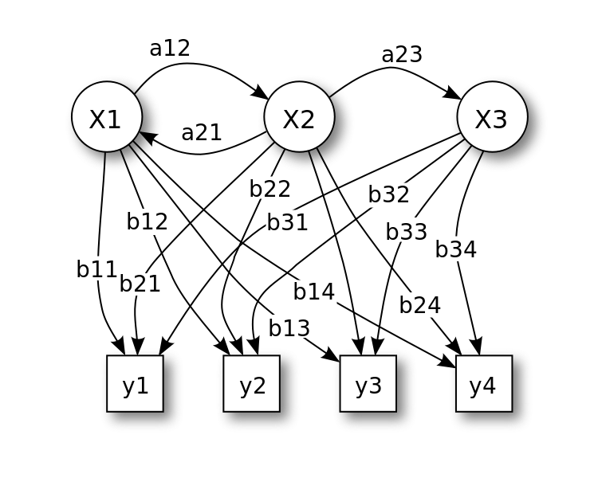
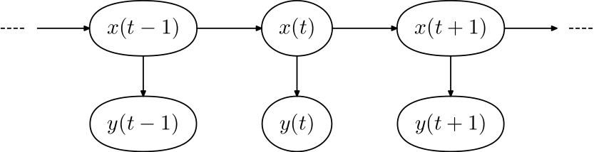
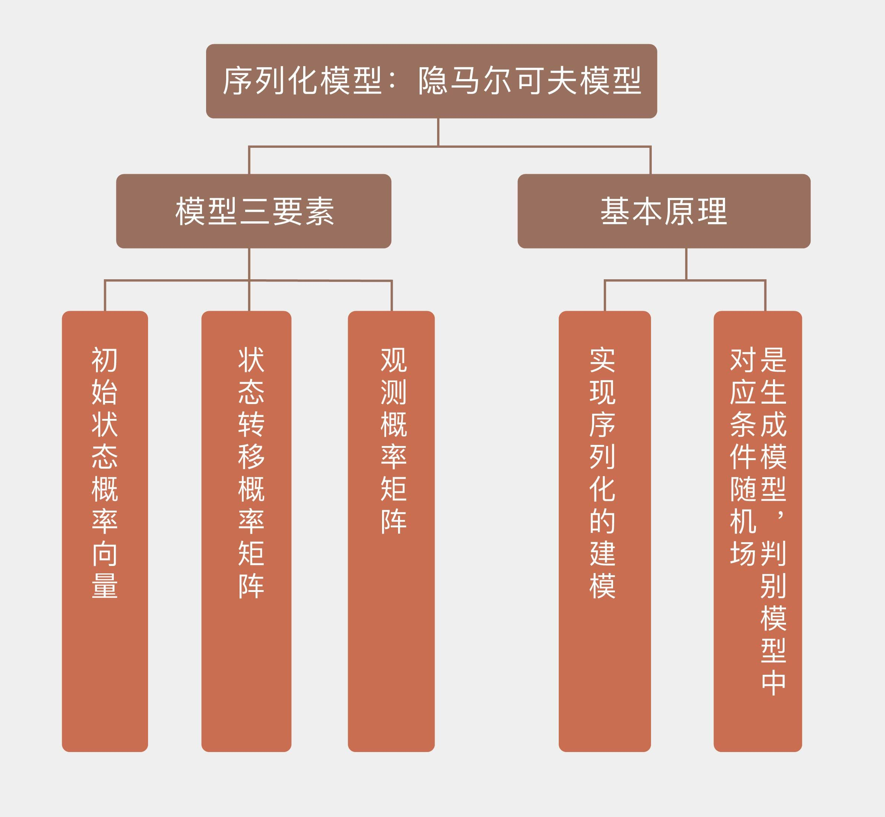

- 00 开篇词 打通修炼机器学习的任督二脉.md
- 01 频率视角下的机器学习.md
- 02 贝叶斯视角下的机器学习.md
- 03 学什么与怎么学.md
- 04 计算学习理论.md
- 05 模型的分类方式.md
- 06 模型的设计准则.md
- 07 模型的验证方法.md
- 08 模型的评估指标.md
- 09 实验设计.md
- 10 特征预处理.md
- 11 基础线性回归：一元与多元.md
- 12 正则化处理：收缩方法与边际化.md
- 13 线性降维：主成分的使用.md
- 14 非线性降维：流形学习.md
- 15 从回归到分类：联系函数与降维.md
- 16 建模非正态分布：广义线性模型.md
- 17 几何角度看分类：支持向量机.md
- 18 从全局到局部：核技巧.md
- 19 非参数化的局部模型：K近邻.md
- 20 基于距离的学习：聚类与度量学习.md
- 21 基函数扩展：属性的非线性化.md
- 22 自适应的基函数：神经网络.md
- 23 层次化的神经网络：深度学习.md
- 24 深度编解码：表示学习.md
- 25 基于特征的区域划分：树模型.md
- 26 集成化处理：Boosting与Bagging.md
- 27 万能模型：梯度提升与随机森林.md
- 28 最简单的概率图：朴素贝叶斯.md
- 29 有向图模型：贝叶斯网络.md
- 30 无向图模型：马尔可夫随机场.md
- 31 建模连续分布：高斯网络.md
- 32 从有限到无限：高斯过程.md
- 33 序列化建模：隐马尔可夫模型.md
- 34 连续序列化模型：线性动态系统.md
- 35 精确推断：变量消除及其拓展.md
- 36 确定近似推断：变分贝叶斯.md
- 37 随机近似推断：MCMC.md
- 38 完备数据下的参数学习：有向图与无向图.md
- 39 隐变量下的参数学习：EM方法与混合模型.md
- 40 结构学习：基于约束与基于评分.md
- 如何成为机器学习工程师？.md
- 总结课 机器学习的模型体系.md
- 总结课 贝叶斯学习的模型体系.md
- 结课 终有一天，你将为今天的付出骄傲.md
33 序列化建模：隐马尔可夫模型
前几讲中介绍概率图模型都没有涉及“时间”尺度，模型所表示的都是同一时刻下的状态，因而不能建模随机变量的动态特性。如果要定义系统在时间尺度上的演化，就需要引入系统状态（system state）的概念，每一时刻的系统状态都是表示系统属性的随机变量。
将图模型中的结点用表示时间流动的有向边连接起来，得到的是动态贝叶斯网络（dynamic Bayesian nework），其最简单的实现是隐马尔可夫模型（hidden Markov model）。
隐马尔可夫模型实现的是序列化的建模，它打破了对数据独立同分布的固有假设，侧重于时序上的依赖关系。在自然语言和金融市场数据这类时间序列（time series）中，某个数据往往会受到之前数据的影响，这种情况下还要强行套用独立同分布假设的话，肯定不会符合实际情况。隐马尔可夫模型正是将过去对现在的影响纳入模型中，以此来实现更加准确的预测。
隐马尔可夫模型则是通过隐藏状态生成观测序列的马尔可夫过程。在更简单的马尔可夫链（Markov chain）里，所有状态是都直接可见的，因此状态转移概率是唯一的参数。而在隐马尔可夫模型中，状态本身不是直接可见的，可见的是取决于状态的输出。由于每个状态都有和输出相关的概率分布，因而隐马尔可夫模型的输出就能够提供关于隐藏状态的信息。
隐马尔可夫模型可以通过下面这个例子来直观地描述，这个例子来自维基百科，是匈牙利数学家乔治·波利亚（George Polya）所提出的罐子问题（urn problem）的变种。

罐子问题表示的隐马尔可夫模型（图片来自维基百科）
上图给出了这个例子的图示：一个观察者不能靠近的房间里有3个罐子\(X_1, X_2, X_3\)，每个罐子里都有同样标签的4个球\(y_1, y_2, y_3, y_4\)。一个具有上帝视角的控制者按一定概率首先选定一个罐子，再从罐子里随机抽取出一个球，放到和房间外面连接的传送带上，同时再补充一个同样的球到罐子里。这样观察者能看到的就是每次抽出的球，而不是每次抽球的罐子。
在隐马尔可夫模型中，罐子表示的是由概率模型生成的不可观测的随机序列，每个罐子都代表了系统的一种状态，所以这个隐藏的序列叫作状态序列（state sequence），也就是上图中圆圈的部分。从罐子中抽出的球表示的是由每个状态所生成的观测所组成的随机序列，这个可见的序列叫作观测序列（observation sequence），也就是上图中方形的部分。序列中的每个位置都代表了一个时刻，从而体现出对时序的建模。
回到前面的例子，在选取罐子时，控制者的策略并不是完全随机的，他在某一时刻的选择只取决于前一时刻的选择，而与之前所有时刻的选择都没有关系，这个状态变化的过程就是齐次马尔可夫过程（homogeneous Markov process）。
有一种“浪漫”的说法说鱼的记忆只有7秒，这么看来齐次马尔可夫过程的记忆就只有1轮。在前面的例子里，如果某个时刻的状态是\(X_3\)，那就说明上一时刻的状态一定是\(X_2\)，因为从状态\(X_1\)是没法直接跳转到\(X_3\)的。
在观测时，任意时刻的观测只取决于当时的状态，而与其他的状态和观测无关，这样的隐马尔可夫模型就满足观测独立性（observation independence）。
假设所有可能的状态\(q_i\)总共有\(N\)个，所有可能的观测结果\(v_j\)总共有\(M\)个，所有抽取出的状态结果\(i_t\)构成长度为\(T\)的状态序列，所有状态生成的观测结果\(o_t\)则构成长度为\(T\)的观测序列。基于齐次马尔可夫性和观测独立性这两个假设，就可以给出隐马尔可夫过程的定量表示。
在第一个时刻的状态选择中，每个状态会被赋予一个初始概率（initial probability）\(\\pi_i = P(i_1 = q_i)\)，这些初始概率共同组成了初始状态概率向量（initial state distribution）\(\\boldsymbol \\pi\)。
随着时序的推移，系统的状态也会不断变化，从上一个状态\(q_i\)跳转到下一个状态\(q_j\)的概率\(a_{ij} = P(i_{t + 1} = q_j | i_t = q_i)\)叫做转移概率（transition probability），所有状态转移概率组成一个维度和状态数目相同的\(N\)维对称方阵\(\\bf A\)，这个矩阵就是状态转移概率矩阵（transition probability matrix）。
对于观察者来说，状态是不可见的，可见的是由状态生成的观测。但状态和观测不是一一对应的关系，一个状态会按照概率分布产生不同的观测。在某一时刻，状态\(q_j\)生成观测\(v_k\)的概率\(b_j(k) = P(o_t = v_k | i_t = q_j)\)叫作发射概率，或者观测概率（emission probability）。
由于可能的状态数目是\(N\)个，每个状态又有\(M\)种可能的观测，这么多观测的概率共同形成了\(N \\times M\)维的观测概率矩阵\(\\bf B\)（emission probaility matrix）。
初始状态概率向量、状态转移概率矩阵和观测概率矩阵共同构成了隐马尔可夫模型的三要素。初始状态概率向量确定了隐马尔可夫模型的结构，状态转移概率矩阵生成了隐藏的状态序列，观测概率矩阵则确定了如何从状态生成观测。三者一起定义出完整的隐马尔可夫模型。下图就给出隐马尔可夫模型的概率图表示。

隐马尔可夫的概率图表示，其中\(\\bf x\)表示状态，\(\\bf y\)表示观测（图片来自维基百科）
在隐马尔可夫模型中，表示隐藏的状态的变量也叫隐变量（latent variable）。一般来说，马尔可夫链假设当前的输出只和之前的有限个输出有关，这有限个输出的数目就是阶数。
马尔可夫链的阶数越高，它需要确定的参数也就越多。而隐马尔可夫模型通过引入隐变量将输出，也就是观测之间的马尔可夫性转移成隐变量之间的马尔可夫性，虽然没有明显地增加参数的数目，却能表示输出之间更复杂的依赖关系。这种结构也被称为状态空间模型（state space model），广泛应用在信号分析和控制论等其他领域中。
从时序上看，上面的模型有马尔可夫的特性；从数据生成的角度看，隐马尔可夫模型又可以看成是一种推广的混合模型。从上面的图中可以看出，同样的观测结果可能来自于不同的状态，因此可以看成是不同状态的混合，每一个状态都对应着混合结果中的一个成分。只不过其中不同的成分不是相互独立的，它们由马尔可夫链所定义的依赖关系联系起来。
推而广之，混合模型（mixture model）是由若干个成分构成的概率模型，每个成分都来自一个独立的概率分布。在总体中采出来的每个样本都是多个成分的混合。虽然不能准确地确定单个样本来自于哪个成分，但通过多个样本的统计特性可以推断出每个混合成分的特征。最常见的混合模型是高斯混合模型（Gaussian mixture model），其中的每个成分都是高斯分布。这部分内容暂且按下，稍后再做详解。
隐马尔可夫模型属于生成模型，可以从贝叶斯的角度加以审视。隐马尔可夫的三要素共同定义了状态和观测的联合分布，其中转移概率相当于隐藏状态的先验分布，而观测概率相当于已知状态时观测的似然分布。
但对于隐藏状态本身的变化而言，我们默认了它们的先验分布是不包含信息的均匀分布。但由于转移概率本身是多取值的分类分布，因此自然的思路是将转移概率的先验设置为狄利克雷分布，也就是分类分布的共轭先验。
狄利克雷分布中有一系列的参数\(\\alpha_i\)，如果所有参数的取值都相等，这样的分布就是对称狄利克雷分布（symmetric Dirichlet distribution）。这种分布也可以看成是无先验的分布，并不能反映出哪些状态比其他状态更可能出现。
这唯一的参数被称为浓度参数（concentration parameter），能够决定转移矩阵的稀疏程度。小于1的浓度参数对应的转移矩阵是稀疏矩阵，其中对于每个给定的源状态，只有少数目标状态具有不可忽略的转移概率。
如果一个狄利克雷分布还不够，那还可以使用层次化的狄利克雷分布。在两级先验中，上层分布（the upper distribution）控制着下层分布（the lower distribution）的参数，下层分布再来继续控制转移概率。这里的上层分布起到的就是前面无信息先验的作用，可以决定哪些状态更容易出现，它的浓度参数决定了状态的密度。
虽然标准的隐马尔可夫模型是生成模型，其在判别模型中的对应是条件随机场（conditional random field）。条件随机场融合了马尔可夫随机场的无向图特性和隐马尔可夫模型的条件特性，如果将上图中隐马尔可夫模型中的有向边都改成无向边，就形成了线性链（linear chain）条件随机场。
线性链条件场将状态定义为可见的输入，发射概率和转移概率也被重新定义为特征函数（feature function）。特征函数可以用来计算输出关于输入的条件概率，进而实现判别，其数学细节在这里就不赘述了。
在Python中有一个专门实现隐马尔可夫模型的库hmmlearn，这个库原本是Scikit-learn中的一个模块，但在新的版本中自立门户。这里使用的例子是根据英超近15个赛季曼市德比的结果构造出的隐马尔可夫模型，其中状态变量被设定为主客场，有2个取值；观测变量则被设定为曼城方的比赛结果，有胜平负3个取值；模型的三要素可以根据30场比赛的结果统计出来。
在未知2018-19赛季英超日程安排，也就是不知道主客场这个隐变量的条件下，利用隐马尔可夫模型也能估计两场曼市德比的胜负。估计结果表明：两队每场都要拼个你死我活，单场比赛平分秋色不太可能出现。
今天我和你分享了隐马尔可夫模型的基本原理，包含以下四个要点：
隐马尔可夫模型由隐藏的状态序列和可见的观测序列构成，能够对时序依赖关系建模；
隐马尔可夫模型的定量描述包括初始状态向量、状态转移矩阵和观测矩阵三部分；
作为生成模型，隐马尔可夫可以视为混合模型的推广；
隐马尔可夫模型的判别方法对应是条件随机场。
隐马尔可夫模型最主要的用武之地非自然语言处理莫属，语音和文字之间天然的时序关联让隐马尔可夫模型如鱼得水。
你可以查阅资料，了解隐马尔可夫模型在自然语言处理中的应用，并在这里分享你的见解。

© 2019 - 2023 Liangliang Lee. Powered by gin and hexo-theme-book.